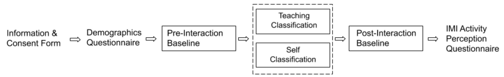
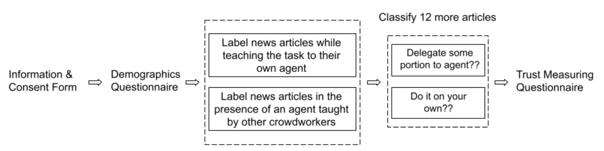

Quick Facts
Overall, our work contributes:
- A study quantifying the extent to which crowdworkers perform better by teaching an agent.
- A study evaluating workers’ trust and willingness to delegate tasks to an agent that they taught
- A set of design guidelines for the use of teachable agents in crowdsourcing contexts.
We evaluate our approach by answering two questions: Does teaching an agent impact crowdworkers performance in the task? Does teaching an agent impact trust and influence crowdworkers’ willingness to delegate tasks?
Abstract
Traditional crowdsourcing has mostly been viewed as requester-worker interaction where requesters publish tasks to solicit input from human crowdworkers. While most of this research area is catered towards the interest of requesters, we view this workflow as a teacher-learner interaction scenario where one or more human-teachers solve Human Intelligence Tasks to train machine learners. In this work, we explore how teachable machine learners can impact their human-teachers, and whether they form a trustable relation that can be relied upon for task delegation in the context of crowdsourcing. Specifically, we focus our work on teachable agents that learn to classify news articles while also guiding the teaching process through conversational interventions. In a two-part study, where several crowd workers individually teach the agent, we investigate whether this learning by teaching approach benefits human-machine collaboration, and whether it leads to trustworthy AI agents that crowd workers would delegate tasks to. Results demonstrate the benefits of the learning by teaching approach, in terms of perceived usefulness for crowdworkers, and the dynamics of trust built through the teacher-learner interaction.
Technique
Our teachable agent was deployed as a textual conversational bot embedded into a task environment that supports human-teachers learning while teaching conversational agents. In the task interface, participants read an article and converse with a conversational agent to teach it how to classify that article. There are two modes, teaching and testing, as described in figure below. In the teaching mode, while reading the article, participants could enter or highlight words to explain how an article should be classified. In the testing mode, participants could present new articles to the teachable agent, and ask them to classify articles in real-time based on what they have learned from the conversational interaction. After the agent’s prediction, correctly classified articles were coloured green by the system, whereas incorrectly classified articled were coloured red. The agent was learning to classify articles using an enhanced version of the Naive Bayes algorithm that incorporates human teaching as additional input. Naive Bayes is a generative classifier, which computes the posterior probability P(y|x) (i.e., the probability of a class y given data x); for text classification, the assumption is that the data is a bag of words and that presence of a particular word in a class is independent to the presence of other words in that class.
Experiments
We conducted 2 experiments to validate the technique. Both the experiments were conducted on Amazon Mechanicam Turk with anonymous participants across several days.
Experiment I: Learning By Teaching

The first experiment was aimed to investigate whether teaching a conversational agent improves crowdworkers’ task performance and experience. For this, we recruited 100 workers Amazon Mechanical Turk with diverse background such as freelancers, managers, engineers, home-makers, and designers. Participants were split into two conditions
- Treatment group (Teaching): Participants taught a conversational agent (Kai) how to classify news articles.
- Control group (Self-Classification): Participants performed the same task with rubric-based instructions but without teaching the agent.
Experiment II: Dynamics of Trust

The second experiment was aimed to study whether teaching an agent affects crowdworkers’ trust and willingness to delegate tasks to that agent. This time, we recruited 80 workers Amazon Mechanical Turk and again split them into two conditions each with two phases. In first phase, participants either interacted with a pre-trained agent or taught their own agent.
- Treatment group: Participants taught their own agent and saw it perform.
- Control group: Participants used a pre-trained agent they didn’t teach themselves.
What Did We Learn?
- Participants who taught their own agent in the first experiment showed higher accuracy in the post-interaction task. Also, they shared more information exchanged than the participants who merely self-classified (especially internally and externally relevant words).
- Participants who taught their own agent found the tasks more useful and enjoyable than those who did the task solo.
- Participants who taught their own agent increased reported trust in the agent and delegated more tasks to the agent (63%) compared to participants from control group (47.5%).
Design Considerations for Interactive Human-AI Systems
-
Conversation as an information gathering mechanism:
- Key Idea: Use dialogue to naturally extract useful training information from users.
- Insight: Strategic, guided conversations help gather clarifications, elicit important features, and reduce data biases or class imbalances.
- Implication: Conversation can serve as an intuitive interface for interactive machine learning systems.
-
Explicit nature of teaching and learning:
- Key Idea: Make the teaching/learning process visible and understandable to users.
- Insight: Users should know when their teaching is being used to improve the agent, and the agent should visibly reflect learning progress.
- Implication: Provide explicit feedback cues (visual/audio) showing when the agent is listening, learning, or retrieving knowledge to build trust and engagement.
-
Treating humans as teachers rather than mere annotators:
- Key Idea: Shift user role from data labeler to knowledge contributor.
- Insight: People found more enjoyment and value in the teaching condition than in self-annotating.
- Implication: Design systems that embrace users as teachers, offering guidance and framing the task as a collaborative learning experience.
Publication
Nalin Chhibber, Joslin Goh, and Edith Law. 2022. Teachable Conversational Agents for Crowdwork: Effects on Performance and Trust. DOI: https://doi.org/10.1145/3555223
BibTeX
@article{chhibber2022teachable,
title={Teachable conversational agents for crowdwork: Effects on performance and trust},
author={Chhibber, Nalin and Goh, Joslin and Law, Edith},
journal={Proceedings of the ACM on Human-Computer Interaction},
volume={6},
number={CSCW2},
pages={1--21},
year={2022},
publisher={ACM New York, NY, USA}
}
Presentation
Slide Deck
Conference Talk
Contact Us
Questions? Feel free to contact:
M.Math Computer Science
School of Computer Science, University of Waterloo
nalin.chhibber [at] uwaterloo.ca
Associate Director, Statistical Consulting Centre
University of Waterloo
joslin.goh [at] uwaterloo.ca
Associate Professor
School of Computer Science, University of Waterloo
edith.law [at] uwaterloo.ca
Nalin Chhibber, Joslin Goh, Edith Law
University of Waterloo © 2022